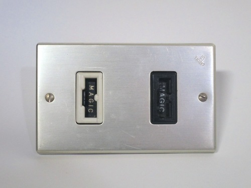
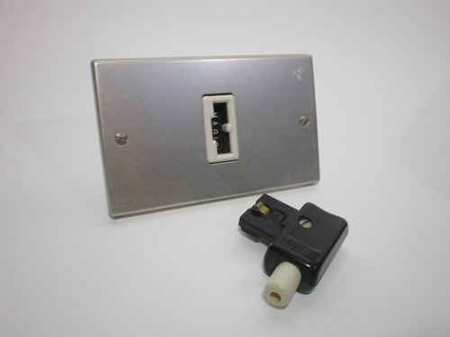
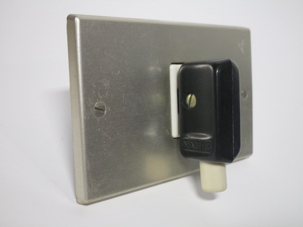
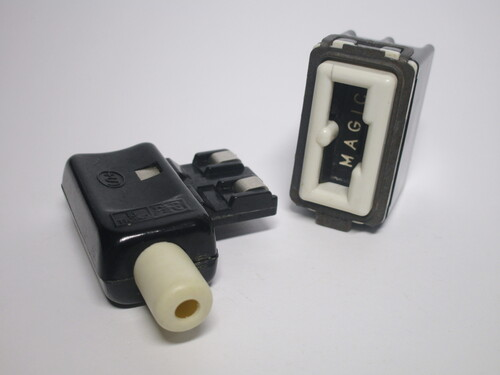
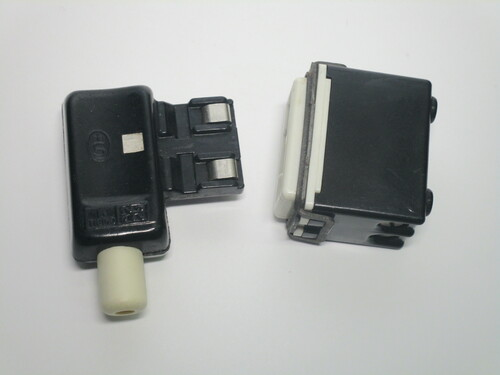
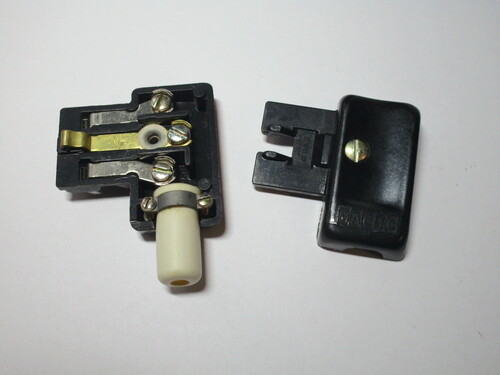

BTicino "Magic" safety plugs and sockets
In the 60s, the standard of plugs and sockets used in Italy at the
time was considerably dangerous: plugs didn't have sleeved pins, which made it easy to accidentally receive a shock, and the sockets
didn't have any sort of safety shutters.
Due to this, there was an increasing dissatisfaction with the current system, and the Italian company BTicino - the most popular
manufacturer of electrical devices at the time - tried to design a replacement which would fix those issues.
Thus, the "prese e spine di sicurezza" - safety plugs and sockets - were created. More commonly, however, they were known as the Magic plugs, as they were created as part of the very popular modular system, with each socket bearing the word "MAGIC" on the front cover.
  {kind=link}
{kind=link}
{kind=link}
This standard was extremely safe for the time and in fact is, arguably, even more safe than any other one used nowadays. The plugs were polarised, and designed in such a way that made it impossible to touch any live contacts, while the sockets had a special type of shutter system which was extremely difficult to defeat.
However, Magic plugs were a failure - no appliances were sold with them, thus requiring the user to rewire them. Adaptors were also available, but obviously defeated the safety measures. Additionally, their higher price limited their adoption to higher-end installations. Over time, standard Italian plugs and sockets also adopted some of these safety features, such as shutters and sleeved pins, which negated the benefits of using the Magic plugs even further.
Ultimately, all of these factors lead to the failure of the Magic standard to reach mass adoption, though it was moderately successful for a number of years as a specialised connector, owing to the fact that it was polarised and incompatible with normal plugs. The 10A version is still available and commonly used for these purposes in Chile, often being found on dedicated circuits for IT and electronic equipment.
10A plug and socket
Rating: 10A 250V
Of the four different types of Magic plugs and sockets released, the 10A ones were by far the most popular. As previously mentioned, these plugs were very safe: instead of having conventional pins like in every other standard, they used a plastic piece with contacts on the side, which couldn't be touched while energised.
The socket had a single shutter on the front with a very peculiar mechanism, which made it impossible to insert anything other than a matching plug, thus preventing electric shocks.
  {kind=link}
{kind=link}
{kind=link}
16A Magic socket
Rating: 16A 250V
16A power sockets were also available - this one was placed inside a special enclosure made for use with extension cords, which could work with other types of modules, including conventional Italian outlets.
Compared to 10A ones, 16A plugs and sockets have some special notches and matching indentations on them: as expected, one of them
prevents the use of 16A plugs in 10A sockets. The second one, however, is more strange, as it does the reverse - stopping 10A
plugs from working in 16A power sockets.
While this may seem unusual, this is exactly the same behaviour as in standard Italian plugs of the time. Later 10A Magic plugs
changed this, and had an extra indentation to fit in 16A sockets.
{kind=link}
{kind=link}
{kind=link}